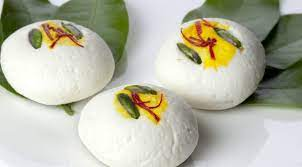
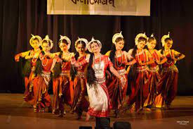

Chennai is known as the "Gateway to South India" and is a major hub for the automobile, software development, hardware manufacturing, healthcare, and textiles industries.
Read MoreIt is the capital of the state and is one of the largest cultural, economic, and educational centers in South India.
Chennai is located on the east coast of India, in the southern state of Tamil Nadu. It is situated on the Coromandel Coast, along the Bay of Bengal. The Chennai Metropolitan Area covers an area of about 1,189 square kilometers (459 square miles), making it one of the largest urban areas in India.
The city has a vibrant cultural scene, with music, dance, and art playing an integral part of the local culture. Chennai is famous for its classical dance form Bharatanatyam and is also known for its Carnatic music concerts.
It is a major economic hub and is home to various industries, including automobile, software development, hardware manufacturing, healthcare, and textiles. It is also a major port city, with the Chennai Port being one of the busiest ports in India. Chennai has a rich history dating back over 400 years, with many landmarks and monuments reflecting its colonial past. The city is home to numerous temples, churches, and mosques, with the Kapaleeshwarar Temple, Fort St. George, and the Santhome Cathedral Basilica being some of the popular attractions.
Chennai is known for its unique cuisine, which is a blend of traditional Tamil Nadu cuisine and the influence of other cuisines such as Andhra, Kerala, and Karnataka. Idli and Dosa, Sambar, Filter Coffee, Chettinad cuisine, Biryani, Parotta, Murukku, Masala Vada, and Thali are some popular food items in Chennai.